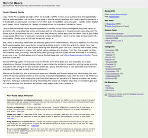
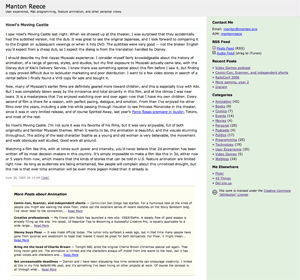

At SXSW I told Mena Trott that RSS 1.0 was dead or dying, because it was too complicated. Turns out I was partially wrong — it’s very much alive, but perhaps only because it’s the default in Movable Type. Six Apart has signed up for the semantic web vision, and they are tool builders so they look for ways to make their products spit out semantic goodness.
I used to feel the same way. I wanted to build tools to help web designers use meta data effectively, provide meaningful structure to their site, put their template-driven pages in a database, and a whole host of other tricks that in 1995 seemed like noble work. I’m too tired for that now. I just want to use the web, and build good software, and do a few other things.
You reach a point where you no longer want to tinker with things that work. Could RSS 2.0 be better? Sure, but so could any number of standards. You need stability to build new tools on top of.
The RSS profile discussion on Sam Ruby’s blog makes me want to set fire to my computer. As do all the competing approaches for putting HTML into RSS.
Ben Trott chimes in with “RSS for Weblogs”. I still think there’s a division in the RSS community between people that want a simple format and people that want to evolve it, embracing RDF and a handful of upcoming weblog-related specs. As such, the battle for RSS standards is going to suck. Of course maybe I’m wrong, maybe this work does need to happen, to “finish” RSS. To all involved, good luck!
<a href=”http://diveintomark.org/archives/2003/04/24/zeldman_has_an_rss_feed.html
“>Mark Pilgrim:
“Zeldman maintains this feed by hand, like he maintains the rest of his site. Let’s keep this in mind the next time someone claims that it’s OK for a data format to be complex because it’ll only ever be produced and consumed by machines.”
In the TypePad announcements comes word that they will be pushing FOAF (friend of a friend). According to the Guardian article, “instantly taking an experimental standard and taking it to the mainstream.” Is that a good thing?
Let’s not forget the little guy who has to code this stuff by hand. And don’t push formats that no one wants. Where possible, give choices. When a product takes off like Movable Type has, the formats that it spits out have a big influence.
I’ll end with a few RDF articles. Hopefully this will be my last blog post about blogs for a while.
IT World: “RDF and other monkey wrenches”
Jon Udell, <a href=”The Semantic Blog:
“But we’d hate to be saddled with the rigorous data preparation that the Safari production teams slog through. That’s the Semantic Web dilemma in a nutshell. Where’s the sweet spot? How can we marry spontaneity and structure? Recent trends in blogspace, plus emerging XML-savvy databases suggest a way forward.”
 
